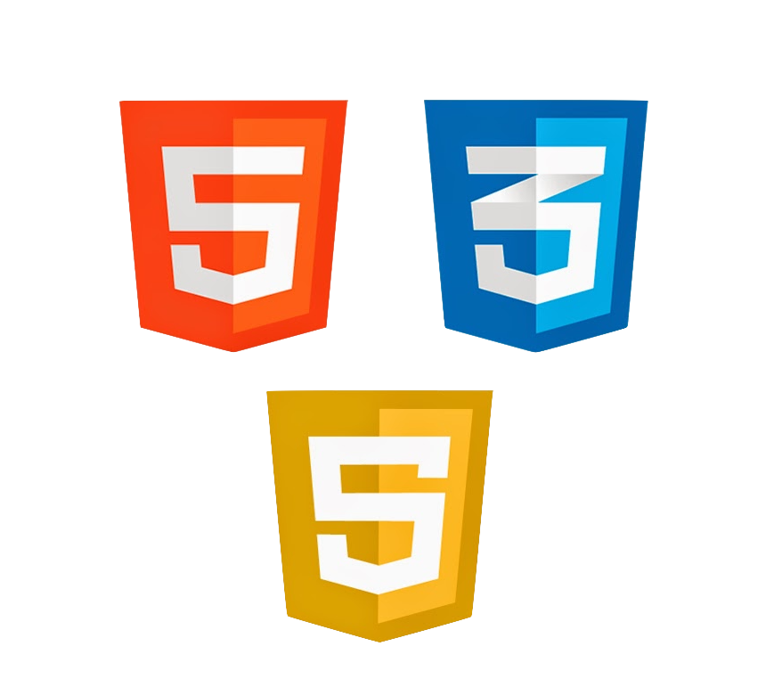

Introduction to the Internet
In this module, I read the brief history and learnt the basic structure of the internet, knowing the importance elements of network such as tcp/ip, ip-address, IPV4/IPV6, client-server, domain name, Network Address Translation (N.A.T), http, web-server,
w3c.
Technologies of Computer Networking have been facilitating the development and application of Competer Science through enabling sharing of data, hardware and software resources, communication and decentralize data processing. Internet, as a connection of the networks, will be involved frequently throught my learning and working journey in the computing sector.
In this semester, I will be learning programming through experiencing practical web application development. Knowledge of the Interent which the web is based upon is fundamental.
Technologies of Computer Networking have been facilitating the development and application of Competer Science through enabling sharing of data, hardware and software resources, communication and decentralize data processing. Internet, as a connection of the networks, will be involved frequently throught my learning and working journey in the computing sector.
In this semester, I will be learning programming through experiencing practical web application development. Knowledge of the Interent which the web is based upon is fundamental.
Introduction to Web Languages

In this module, I obtain a better understanding of the Markup Language and Programming Language and became more familiar with how HTML, CSS and JavaScript together serve as the fundamental languages composing a website with their respective responsibilities.
In terms of the Markup Languages mainly used in Web, HyperText Markup Language (HTML) explains the content and structure of a website to the browser in order to render it. Cascading Style Sheet (CSS) records how the elements in HTML
documents should be formatted and styled. For Programming Language, JavaScript is used to write instructions controlling the behavior of the web elements.
The above mentioned concepts and HTML & CSS exercises in this module provided me a stepping-stone of my computing journey. Through practical front-end web developing exercse, I got preliminary understanding of how to use a language syntax to tell computer what to do. The front-end web development knowledge is also an indispensible part of this semester, as well as my future possible web developing career.
The above mentioned concepts and HTML & CSS exercises in this module provided me a stepping-stone of my computing journey. Through practical front-end web developing exercse, I got preliminary understanding of how to use a language syntax to tell computer what to do. The front-end web development knowledge is also an indispensible part of this semester, as well as my future possible web developing career.
Introduction to Programming
I perceived the concept of low-level and high-level languages. While the high-level languages are more human readable, low-level languages require less computer interpretation.
High-level languages are suitable for me as a beginner to learn the programming concepts and algorithms for problem solving. The execution details which is not directly related to problem solving are abstracted by the languages. Despite of that, try figuring out how low-level languages work and the execution details is my future learning target.
In this module, the way of introducing programming through fundamental concepts at a gerneric level instead of specific language remind me of a better starting point of learning. Choosing a a specific language to be mastered may not be the target of my current learning stage. Instead, practicing problem solving in a way of using programming concepts such as conditions, branching, iteration and function is the aim. Thus, with this aim being kept in mind, it would not be a hardtime getting familiar with JavaScript and Python simultaneously in the following module.
High-level languages are suitable for me as a beginner to learn the programming concepts and algorithms for problem solving. The execution details which is not directly related to problem solving are abstracted by the languages. Despite of that, try figuring out how low-level languages work and the execution details is my future learning target.
In this module, the way of introducing programming through fundamental concepts at a gerneric level instead of specific language remind me of a better starting point of learning. Choosing a a specific language to be mastered may not be the target of my current learning stage. Instead, practicing problem solving in a way of using programming concepts such as conditions, branching, iteration and function is the aim. Thus, with this aim being kept in mind, it would not be a hardtime getting familiar with JavaScript and Python simultaneously in the following module.

Introduction to Data Representation
I got familiar with how computers orgainse data and relate different bits to the correct data interpretation. I have learnt the reason of digital electronic computers using binary, convertion among the decimal, binary, octal and hexadecimal system, addition
and rounding of numbers, fixed-point number system, trade-off between range and precision, presentation of negative number through sign & magnitude or two-complement ways.
Although operations of number system and data representation might not be involved in the usage of JavaScript and Python in this semester, they are still fundamental concepts in computer science. Understanding can make it less confusing and unintuitive when handling other computer concepts. They are involved in computing operations such as storing and managing various type of data, sending data over the Internet, compression and encryption. The knowledge of bits also helps us to write more efficient code in the future.
Although operations of number system and data representation might not be involved in the usage of JavaScript and Python in this semester, they are still fundamental concepts in computer science. Understanding can make it less confusing and unintuitive when handling other computer concepts. They are involved in computing operations such as storing and managing various type of data, sending data over the Internet, compression and encryption. The knowledge of bits also helps us to write more efficient code in the future.